Summary:
See also: Dynamic User Interface.
Presentation Styles allow you to define a set of decoration properties to be used in graphical objects. Presentation Styles are provided to centralize attributes related to the appearance of user interface elements.
Typical presentation attributes define font properties and foreground and background colors. Some presentation attributes will be specific to a given class of widgets (like the first day of week in a DATEEDIT).
Presentation Styles are defined in a resource file having an extension of 4st, which must be distributed with other runtime files.
<StyleList>
<Style name="style-identifier" >
<StyleAttribute name="attribute-name"
value="attribute-value" />
[...]
</Style>
[...]
</StyleList>
where style-identifier can be:
{ *
| element-type
| .style-name
| element-type.style-name }
Window).
style
attribute.
Presentation Styles centralize the attributes related to the decoration
of the elements of the user interface. Note that Presentation Styles are
only supported for the GUI front-ends. If you design an application for
the TUI mode, you can use TTY attributes. Styles are applied implicitly by
using global styles, or explicitly by naming a specific style in the
style attribute of the element.
In the definition of a style, the 'name' attribute is used as a selector to apply style attributes to graphical elements.
You can define a style as global or specific:
01<Style name="*" >
01<Style name="Window" >02<Style name="Edit" >03<Style name="ComboBox" >
01<Style name=".important" >02<Style name=".smallfont" >
01<Style name="Window.main" >02<Style name="Edit.mandatory" >
Priority: When different styles can be applied to an element, the following priority, from the most precise to the most generic, is used to determine the correct style :
element-type.style-name.style-nameelement-type*
For instance, to find the style which will be applied to an Edit having
the style attribute
set to 'mandatory', the following styles will be analyzed:
Edit.mandatory.mandatoryEdit*You can define a pseudo selector to make your style apply only when some conditions are fulfilled. You must precede it with a colon. You can also combine the pseudo selectors. If you do so, the style will be applied if all pseudo selector conditions are fulfilled.
01<Style name="Table:even:input" >02<Style name="Edit:focus" >03<Style name="Edit.important:focus" >
Pseudo selectors have different priorities, and the style with the most important pseudo selector will be used when several styles match.
| Priority | Pseudo selectors | Condition |
| 1 |
focus |
the widget has the focus |
| 2 |
query |
the widget is in construct mode |
| 3 |
display |
the widget is in a display array |
| 4 |
input |
the widget is in an input array, input or construct |
| 5 |
even |
this widget is on an even row if an array (only Table) |
| 6 |
odd |
this widget is on an odd row if an array (only Table) |
| 7 |
inactive |
the widget is inactive |
| 8 |
active |
the widget is active |
| 9 |
message |
applies only to text displayed with the MESSAGE instruction |
| 10 |
error |
applies only to text displayed with the ERROR instruction |
Pseudo selectors also define the priority of your styles;: a more generic style will be used if the pseudo-selector has higher priority.
For instance: you want all important edits to have red text, but you want the current field to be displayed in blue:
01<Style name="Edit.important" >02<Style name=":focus" >
Style ":focus" may be more generic than Edit.important; it will be used for the focused item, as the pseudo selector is more precise.
To apply a specific style, set the style-name in the style attribute
of the node representing the graphical element in the Abstract User Interface tree.
There are different ways to set the style attribute of a element:
For example, to define a style in a form file for a input field:
01 EDIT f001 = customer.fname, STYLE = "info";
You can combine several styles by using the space character as a separator in the
style attribute:
01 EDIT f001 = customer.fname, STYLE = "info highlight mandatory";When several styles are combined, the same presentation attribute might be defined by different styles. In this case, the first style listed that defines the attribute takes precedence over the other styles.
For example, if the textColor presentation attribute is defined
as follows by the styles info, highlight and mandatory:
textColor.textColor as blue.textColor as red.
Then the widgets having a style set to "info highlight mandatory"
have textColor of blue.
A style attribute may be inherited by the descendants of a given node in the Abstract
User Interface tree. For example, when using a style defining a fontFamily
in a GROUPBOX container, you would expect that all the children in that
groupbox would have the same font. However, some style attributes should not be inherited,
such as backgroundImage.
Style inheritance is implicitly defined based on the attribute. The following sections contain tables with descriptions of style attributes, including the implicit inheritance for each attribute.
Presentation Styles are defined in the Abstract User Interface
tree, under the UserInterface node, in a StyleList
node following the syntax described above. The StyleList node holds
a list of Style nodes that define a set of attribute values. Attribute
values are defined in StyleAttribute nodes, with a name
and a value attribute.
Presentation Styles can be defined in an XML file that has the 4st
extension. By default, the runtime system searches for a file named "default.4st"
in the current directory. If this file does not exist, it searches in the directories
defined in the DBPATH/FGLRESOURCEPATH
environment
variable. If the file was not found using DBPATH/FGLRESOURCEPATH, standard Genero
presentation styles are loaded
from "FGLDIR/lib/default.4st" file.
You can overwrite the default search by loading a specific Presentation Style file
with the ui.Interface.loadStyles() method. This
method accepts an absolute path with the 4st extension,
or a simple file name without the 4st extension.
If you give a simple file name, for example "mystyles", the
runtime system searches for the "mystyles.4st" file in the
current directory. If the file does not exist, it searches in the directories defined
in the DBPATH/FGLRESOURCEPATH
environment variable.
FGLDIR/lib should
not be modified directly: your changes would be lost if you upgrade
Genero FGL. You better make a copy if the original file into the
program directory of your application.01<StyleList>02<Style name="*" >03<StyleAttribute name="fontFamily" value="serif" />04</Style>05<Style name=".important" >06<StyleAttribute name="textColor" value="#ff0000" />07</Style>08<Style name="Window" >09<StyleAttribute name="toolBarPosition" value="top" />10<StyleAttribute name="statusBarType" value="default" />11</Style>12<Style name="Window.dialog" >13<StyleAttribute name="toolBarPosition" value="none" />14<StyleAttribute name="statusBarType" value="node" />15</Style>16</StyleList>
01MAIN02CALL ui.Interface.loadStyles("mystyles")03...04END MAIN
Specific TTY attributes defined for a form element have a higher priority than style attributes, while inherited TTY attributes (set on one of the parent elements) have a lower priority than style attributes defined for the element.
To illustrate this rule, imagine a form defining 2 static labels and 2 fields, with all items using the mystyle presentation style, and one of the labels and fields defining a specific blue text color:
01LABEL lab01: TEXT="Field 1:", COLOR = BLUE, STYLE = "mystyle";02EDIT fld01 = FORMONLY.field01, COLOR = BLUE, STYLE = "mystyle";03LABEL lab02: TEXT="Field 2:", STYLE = "mystyle";04EDIT fld02 = FORMONLY.field02, STYLE = "mystyle";
The program displays the form (or window) with an ATTRIBUTES clause using a red color, and the fields are used by an INPUT dialog (with no ATTRIBUTES clause, so the default TTY attributes are gotten from the OPEN FORM instruction):
The .4st styles file defines the mystyle attributes as follows:01OPEN FORM f FROM "ttyform"02DISPLAY FORM f ATTRIBUTES(RED)03INPUT BY NAME field01, field02 WITHOUT DEFAULTS
01<StyleList>02<Style name="Edit.mystyle" >03<StyleAttribute name="textColor" value="green" />04</Style>02<Style name="Label.mystyle" >03<StyleAttribute name="textColor" value="magenta" />04</Style>16</StyleList>
The text in the form field fld01 is displayed in blue (from the specific COLOR attribute), while fld02 is displayed in red (the TTY attribute of the form, the style Edit.mystyle being ignored).
Since labels are not used by the interactive instructions, lab01 is displayed in blue (from the specific COLOR attribute), while lab02 is displayed in magenta (from the style Label.mystyle, the form TTY attribute red being ignored).
Styles may apply to any graphical elements of the user interface, such as the following:
|
|
The name of the element when used in a style file is case-sensitive (CheckBox, not checkbox).
This section describes how to specify a value for style attributes defining colors,
such as textColor.
{ generic-color | #rrggbb }
The language defines a set of generic colors, interpreted by the front end according to the graphical capability of the workstation.
| Generic color name | RGB Value | Color sample |
white |
#FFFFFF |
|
black |
#000000 |
|
darkGray |
#A9A9A9 |
|
gray |
#808080 |
|
lightGray |
#D3D3D3 |
|
darkBlue |
#00008B |
|
blue |
#0000FF |
|
lightBlue |
#ADD8E6 |
|
darkCyan |
#008B8B |
|
cyan |
#00FFFF |
|
lightCyan |
#E0FFFF |
|
darkMagenta |
#8B008B |
|
magenta |
#FF00FF |
|
lightMagenta |
#FFC0FF |
|
darkOlive |
#505000 |
|
olive |
#808000 |
|
lightOlive |
#AAAA44 |
|
darkGreen |
#006400 |
|
green |
#00FF00 |
|
lightGreen |
#90EE90 |
|
darkTeal |
#005050 |
|
teal |
#008080 |
|
lightTeal |
#33CCCC |
|
darkRed |
#8B0000 |
|
red |
#FF0000 |
|
lightRed |
#FF8080 |
|
darkOrange |
#FF8C00 |
|
orange |
#FFA500 |
|
lightOrange |
#FFCC00 |
|
darkYellow |
#AAAA00 |
|
yellow |
#FFFF00 |
|
lightYellow |
|
You can also specify a generic system color:
| Generic system color name | Meaning |
window |
Window background. |
windowText |
Text in Windows. |
buttonFace |
Face color for three-dimensional display elements. |
buttonText |
Text on PushButtons. |
highLight |
Item(s) selected in a control. |
highLightText |
Text of item(s) selected in a control |
infoBackground |
Background color for tooltip controls. |
infoText |
Text color for tooltip controls. |
grayText |
Grayed (disabled) text. |
appWorkSpace |
Background color of multiple document interface |
background |
Desktop background |
You can also specify a color with the RGB notation, starting with a # dash character.
Each value of the RGB color specification must be provided in hexadecimal, in the range [00-FF].
<StyleAttribute name="textColor" value="blue" />
<StyleAttribute name="textColor" value="#00FF45" />
A desktop application should follow the current desktop settings. The front-end tries to determine the default font for the desktop, and also offers a global font chooser to let the end-user define which font best matches his expectations.
In most cases it is not possible to know what a potential end-user might expect
regarding the font family. Therefore, the configuration should avoid
using explicit font families and use only the fontWeight/fontStyle/fontSize
properties. Only if the client can't determine a proper default font family for
the desired platform should a known font family be added to the configuration.
Use abstract font sizes such as medium,
large, small, or sizes relative to the user-chosen font
(em
units), rather than absolute point values. In an HTML browser you can choose two
fonts (proportional/fixed), and a well-designed document should not use more than
2 fonts. This is also valid for applications.
This section describes the possible values of the fontFamily style
attribute.
font-family [,...]
The language defines a set of generic font families, interpreted by the front end according to the graphical capability of the workstation:
| Generic font family name | Real font family example | Text sample |
serif |
Times | This is a nice font! |
sans-serif |
Arial | This is a nice font! |
cursive |
Comic Sans Ms | This is a nice font! |
fantasy |
Algerian | This is a nice font! |
monospace |
Courier New | This is a nice font! |
Any other name is interpreted as a specific font family, which identifies a local font supported by the front-end. Usually, it is one of the fonts installed on the workstation operating system. See front-end documentation for a list of supported local fonts.
Any font name containing white-spaces must be quoted, with single quotes.
You can specify a comma-separated list of font families.
<StyleAttribute name="fontFamily" value="sans-serif" />
<StyleAttribute name="fontFamily" value="'Courier New'" />
<StyleAttribute name="fontFamily" value="'Times New Roman',Times,serif"
/>
This section describes the possible values of the fontSize style attribute.
{ generic-size | nnpt | xxem }
small' or
'xx-large'.
The language defines a set of generic font sizes, interpreted by the front end according to the graphical capability of the workstation.
xx-small, x-small, small, medium, large, x-large, xx-large.
You can also specify an absolute font size, by giving a numeric value followed by the units (pt):
<StyleAttribute name="fontSize" value="medium" />
<StyleAttribute name="fontSize" value="xx-large" />
<StyleAttribute name="fontSize" value="12pt" />
<StyleAttribute name="fontSize" value="1em" />
A Style attribute may be a common attribute that can be applied to any graphical element. Other Style attributes apply only to a specific graphical element (see below).
The style attributes described in this section apply to any graphical elements, such as windows, layout containers, or form items.
| Attribute | Inheritance | Description |
backgroundImage |
No |
Defines an image file to be displayed in the background. Value can be a simple local image file name without the extension, or an URL. Default is no value (no background image). |
backgroundColor |
No |
Defines the color to be used to fill the background of the object. For possible values, see Colors. Default is no value (default color of the object). |
fontFamily |
Yes |
Defines the name of the font. For possible values, see Font Families. Default is no value (default object font or inherited font). |
fontSize |
Yes |
Defines the size of the characters. For possible values, see Font Sizes. Default is no value (default object font or inherited font). |
fontStyle |
Yes |
Defines the style of characters. Values can be "normal", "italic" or
"oblique". Default is no value (default object font or inherited font). |
fontWeight |
Yes |
Defines the weight of the characters. Values can be "light", "normal",
"bold", "demi-bold" or "black".Default is no value (default object font or inherited font). |
textColor |
Yes |
Defines the color to be used to paint the text of the object. For possible values, see Colors. Default is no value (default object color or inherited color). |
textDecoration |
Yes |
Defines the decoration for the text. Values can be "overline", "underline"
or "line-through".Default is no value (default object font or inherited font). |
border |
No |
Defines the border for the widget. If Value is "none", it removes the border.Default is no value (the widget gets its default appearance). This attribute especially applies to Image, Edit, ButtonEdit, DateEdit, RadioGroup, Group, Button, Action, MenuAction, Menu, and Dialog. |
localAccelerators |
No |
Defines how the widget must behaves regarding key strokes. If value is "yes" (default), the local accelerators have higher priority.Ex: "HOME" key moves the cursor to the first position. If value is "no", the application accelerators have higher priority.Ex: "HOME" key selects the first row of the current array. The following keys are managed "locally" if attribute defined to "yes".
TextEdits: left, right, up, down, (control+)home, (control+)end, (control+)backspace, (control+)delete
Edits Based widgets: left, right, home, end, (control+)backspace, (control+)delete
|
imageCache |
No |
Defines if the image of the item can be cached of not by the front end. If value is "yes" the front-end can cache the image locally.
By default, Image for image fields are not cached and image for form items (Button, TopMenu item, Toolbar item) are cached..
|
The following table shows the presentation attributes for Windows:
| Attribute | Inheritance | Description |
windowType |
No |
Defines the basic type of the window. Values can be "normal"
or "modal".Normal windows are displayed as typical application windows. Modal windows are displayed at the top of all other windows, typically used for temporary dialogs. Default is "normal". |
windowState |
No |
Defines the initial state of a window. Values can be "normal"
or "maximized".Default is "normal". |
ignoreMinimizeSetting |
No |
Defines if the stored settings "state=minimize" must be ignored when loading settings. To be used when minimized windows should not be shown minimized again when reopen. Values can be "yes" or "no" (default).
|
windowOptionClose |
No |
Defines if the window can be closed with a system menu option or window header button.
Values can be "yes", "no" or "auto".
When value is "auto", the option is enabled according to
the window type.Default is "auto".Warning: This attribute may have different behavior depending on the front end operating system. For example, when no system menu is used, it may not be possible to have this option enabled. |
windowOptionMinimize |
No |
Defines if the window can be minimized with a system menu option or window header
button. Values can be "yes", "no"
or "auto". When value is "auto", the
option is enabled according to the window type.Default is "auto".Warning: This attribute may have different behavior depending on the front end operating system. For example, when no system menu is used, it may not be possible to have this option enabled. |
windowOptionMaximize |
No |
Defines if the window can be maximized with a system menu option or window header
button. Values can be "yes", "no"
or "auto". When value is "auto", the
option is enabled according to the window type.Default is "auto".Warning: This attribute may have different behavior depending on the front end operating system. For example, when no system menu is used, it may not be possible to have this option enabled. |
windowSystemMenu |
No |
Defines if the window shows a system menu. Values can be "yes",
"no" or "auto". When value is "auto",
the system menu is enabled according to the window type.Default is "auto". |
sizable |
No |
Defines if the window can be resized by the user. Values can be "yes",
"no" or "auto". When using "auto",
the window becomes resizable if the content of the first displayed form has resizable
elements, for example when using a form with a
TABLE container or an TEXTEDIT
with STRETCH attribute.Warning: On Linux, most of window managers don't take into account sizable set to "no".When using "auto",
the window becomes resizable based on the first form used in the window; the content
of further forms is ignored.Default is "yes". |
position |
No |
Indicates the initial position of the window. Values can be "default",
"field", "previous", "center" or "center2".When using "default", the windows are displayed according
to the window manager rules.
When using "field" the window is displayed below the current field (works as
"default" when current field does not exist).When using "previous" the window is displayed at the same position (top left corner) as the previous window.
(works as "default"
when there is no previous window).With "center", the window is
displayed in the center of the screen.With "center2", the
window is displayed in the center of the current window.Default is "default".Warning: for front-ends using stored settings, "field", "previous"
and
"previous" have higher
priority than the settings. |
border |
No |
Defines the border type of the window. Values can be "normal",
"frame", "tool" or "none".
When using "normal", the border is standard, with a normal
window header with a caption. When using "frame", only a
frame appears, typically without a window header. When using "tool",
a small window header is used. When using "none", the window
has no border.Default is "normal"Warning:: On Linux KDE 3.x client machines, any application that is started on the Genero Desktop Client with window style attribute "border"
set to "tool" seems to disappear when you click elsewhere than on the window itself. But you can
make it appear again by clicking on the GDC console. KDE also allows to configure this behavior: Press Alt-F3, then
"Configure Window Behavior" => "Advanced" => uncheck "Hide utility windows for inactive applications". |
forceDefaultSettings |
No |
Indicates if the window content must be initialized with the saved positions and
sizes. By default, windows are re-opened at the position and with the size they
had when they were closed. You can force the use of the initial settings with this
attribute. This applies also to column position and width in tables. Default is "0". |
actionPanelPosition |
No |
Defines the position of the action button frame (OK/Cancel). Values can be
"none", "top", "left",
"bottom" or "right".Default is "right". |
actionPanelButtonSize |
No |
Defines the width of buttons. Values can be "normal", "shrink",
"tiny", "small", "medium",
"large" or "huge". When using "normal"
and "shrink", buttons are sized according to the text or
image, where "shrink" uses the minimum size needed to display
the content of the button.Default is "normal". |
actionPanelButtonSpace |
No |
Defines the space between buttons. Values can be "none",
"tiny", "small", "medium",
"large" or "huge".Default is "medium". |
actionPanelButtonTextAlign |
No |
Defines the text alignment inside buttons. Values can be "left", "center",
"right"
Default is "left" when the button have an icon, "center" otherwise. |
actionPanelDecoration |
No |
Defines the decoration of the action panel. Values can be "auto",
"yes", "no" and "dockable".Default is "auto". |
actionPanelScroll |
No |
Defines if the action panel is "ring" - that is, when the last button
is shown,
pressing on the "down" button will show the first one again. Values can be
"0" or "1". Default is "1". |
actionPanelScrollStep |
No |
Defines how the action panel should scroll when clicking the "down" button,
to shown the next visible buttons. Values can be "line" or
"page", default is "line". When
"line", the panel will scroll by one line, and then show
only the next button. When "page", the scrolling will be
done page by page. |
actionPanelHAlign |
No |
Defines the alignment of the action panel when actionPanelPosition
is "top" or "bottom". Values can be
"left", "right" or "center".Default is "left". |
ringMenuPosition |
No |
Defines the position of the ring menu frame (MENU).
Values can be "none", "top", "left",
"bottom" or "right".Default is "right". |
ringMenuButtonSize |
No |
Defines the width of buttons. Values can be "normal", "shrink",
"tiny", "small", "medium",
"large" or "huge". When using "normal"
and "shrink", buttons are sized according to the text or
image, where "shrink" uses the minimum size needed to display
the content of the button.Default is "normal". |
ringMenuButtonTextAlign |
No |
Defines the text alignment inside buttons. Values can be "left", "center",
"right"
Default is "left" when the button have an icon, "center"
otherwise. |
ringMenuButtonSpace |
No |
Defines the space between buttons. Values can be "none",
"tiny", "small", "medium",
"large" or "huge".Default is "medium". |
ringMenuDecoration |
No |
Defines the decoration of the menu panel. Values can be "auto",
"yes", "no" and "dockable".Default is "auto". |
ringMenuScroll |
No |
Defines if the ring menu is "ring" - that is. when the last button
is shown,
pressing on the "down" button or using the "down" key will show the
first one again. Values can be "0" or "1".
Default is "1". |
ringMenuScrollStep |
No |
Defines how the ring menu should scroll when clicking "down" when the
visible button is selected, to show the next buttons. Values can be "line"
or "page", default is "line". When
"line", the menu will scroll by one line, and show
only the next button. When "page", the scrolling will be
done page by page. |
ringMenuHAlign |
No |
Defines the alignment of the ring menu when ringMenuPosition is "top"
or "bottom". Values can be "left",
"right" or "center".Default is "left". |
toolBarPosition |
No |
Indicates the position of the toolbar, when a toolbar
is defined. Values can be "none", "top",
"left", "bottom" or "right".Default is "top". |
toolBarDocking |
No |
Defines if the toolbar is movable and floatable. Values can be "yes" (default), "no". |
commentPosition |
No |
Defines the output type of the status bar comment field. Values can be "statusbar",
"popup", "statustip", "both".
"statustip" will add a small "down" arrow button that will show the popup once the user clicks on it;
this can be useful to display very long text.
"both" will display the comment text in a popup
window and then in the status bar.Default is "statusbar".
|
messagePosition |
No |
Defines the output type of the status bar message field. Values can be "statusbar",
"popup", "statustip", "both".
"popup" will bring a window popup to the front; it should be used with care, since it can annoy the user.
"statustip" will add a small "down" arrow button that will show the popup once the user clicks on it;
this can be useful to display very long text.
"both" will display the message text in a popup
window and then in the status bar.Default is "statusbar".
|
errorMessagePosition |
No |
Defines the output type of the status bar error field. Values can be "statusbar",
"popup", "statustip", "both".
"popup" will bring a window popup to the front; it should be used with care, since it can annoy the user.
"statustip" will add a small "down" arrow button that will show the popup once the user clicks on it;
this can be useful to display very long text.
"both" will display the error text in a popup
window and then in the status bar.Default is "statusbar".
|
formScroll |
No |
Defines if scrollbars should always be displayed when the form is bigger than screen, or only when the window is maximized.
Values can be "yes" or "no".Default is "yes".
|
statusBarType |
No |
Defines the type of status bar the window will display. See
below for all possible values. Default is "default".
|
The next table shows all possible status bar types you can set with the statusBarType attribute for Windows:
| Value | Screenshot |
default |
|
lines1 |
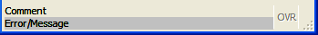 |
lines2 |
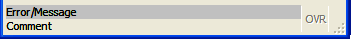 |
lines3 |
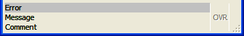 |
lines4 |
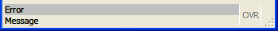 |
lines5 |
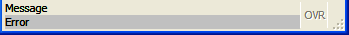 |
lines6 |
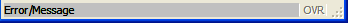 |
panels1 |
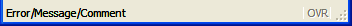 |
panels2 |
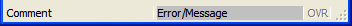 |
panels3 |
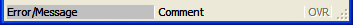 |
panels4 |
|
panels5 |
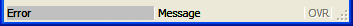 |
panels6 |
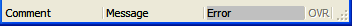 |
panels7 |
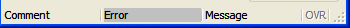 |
none |
The following Window style attributes modify how the window will manage StartMenus.
| Attribute | Inheritance | Description |
startMenuPosition |
No |
Indicates the position of the startmenu, when one
is defined. Values can be "none", "tree",
"menu" or "poptree".
"tree" - the startmenu is displayed as a treeview, always visible
on the right side of the window. "menu" - the startmenu
is displayed as a pull-down menu, always visible at the top of the window.
"poptree" - the startmenu is displayed as a treeview
in a popup window that can be opened with a short-cut (see startMenuShortcut). Default is "none". |
startMenuSize |
No |
Defines the size of the startmenu, when one is defined
and the position is defined as "tree" or "poptree".
The values can be "tiny", "small",
"medium", "large" or "huge".Default is "medium".Note: the size will also depend on the font used for the startmenu. |
startMenuShortcut |
No |
Defines the shortcut key to open a startmenu, when
the position is defined as "poptree".Default is "control-shift-F12". |
startMenuAccelerator |
No |
Defines the shortcut keys to execute the select startmenu
item, when the position is defined as "tree" or "poptree".By default, "space", "enter" and
"return" start the application linked to the current item. |
The following table shows the presentation attributes for the MDI container:
| Attribute | Inheritance | Description |
windowMenu |
No |
Defines if the MDI Container should display an automatic "Window" menu,
which holds the Cascade and Tile
features, and list of open Windows. |
tabbedContainer |
No |
Defines if the MDI Container must display the child
application windows in a folder tab. |
tabbedContainerCloseMethod |
No |
Defines the folder tab method of the MDI Container when |
The following table shows the presentation attributes for the Folder container:
| Attribute | Inheritance | Description |
position |
No |
Defines the position of the folder tabs. |
The following table shows the presentation attributes for Action:
| Attribute | Inheritance | Description |
scaleIcon |
No |
Defines if the scaling behaviors of the associated icon. Independently of the style value, if an icon must be scaled, the source image will never be upscaled to avoid as much as possible pixellization or blurring the image. The notable exception is when the image come from an SVG file which can be upscaled or downscaled without any penalty. If the icon must anyway be made bigger, the image will be centered and a transparent border will be added around to "fill" the empty space. It will allow user to mix big icon with smaller one but also to keep widget alignment If a scaling take place, the aspect ratio of the original image will be kept, keeping non square source as non square scaled icon. Values can be "not set" (default), "yes", "no" and
"<XXX>px"- "not set": Image are scaled down to match a fixed value of 16*16 pixels.- "yes": Image are scaled down according to the height of the button. Setting a "big" font, may result with a "big" icon.- "no": No scalling occurs at all, the image are taken "as is". It's up to the user to resize the source image to avoid misalignment.- "<XX>px": Image are scaled down according to the ("XX") pixels size. Thus, specifying scaleIcon="128px"
will make every icon to have no more than 128*128 pixels, but at least one side equal to 128 pixels, depending if the source image is square or not. |
The following table shows the presentation attributes for Button:
| Attribute | Inheritance | Description |
buttonType |
No |
Defines the rendering of a button. Values can be "normal" (default), "link". |
scaleIcon |
No |
Defines if the scaling behaviors of the associated icon. Independently of the style value, if an icon must be scaled, the source image will never be upscaled to avoid as much as possible pixellization or blurring the image. The notable exception is when the image come from an SVG file which can be upscaled or downscaled without any penalty. If the icon must anyway be made bigger, the image will be centered and a transparent border will be added around to "fill" the empty space. It will allow user to mix big icon with smaller one but also to keep widget alignment If a scaling take place, the aspect ratio of the original image will be kept, keeping non square source as non square scaled icon. Values can be "not set" (default), "yes", "no" and
"<XXX>px"- "not set", "no": No scalling occurs at all, the image are taken "as is".
It's up to the user to resize the source image to avoid button misalignment.- "yes": Image are scaled down according to the height of the button. Setting a "big" font may result with a "big" icon.- "<XX>px": Image are scaled down according to the ("XX") pixels size. Thus, specifying scaleIcon="128px"
will make every icon to have no more than 128*128 pixels, but at least one side equal to 128 pixels, depending if the source image is square or not. |
The following table shows the presentation attributes for ButtonEdit:
| Attribute | Inheritance | Description |
scaleIcon |
No |
Defines if the scaling behaviors of the associated icon. Independently of the style value, if an icon must be scaled, the source image will never be upscaled to avoid as much as possible pixellization or blurring the image. The notable exception is when the image come from an SVG file which can be upscaled or downscaled without any penalty. If the icon must anyway be made bigger, the image will be centered and a transparent border will be added around to "fill" the empty space. It will allow user to mix big icon with smaller one but also to keep widget alignment If a scaling take place, the aspect ratio of the original image will be kept, keeping non square source as non square scaled icon. Values can be "not set" (default), "yes", "no" and
"<XXX>px"- "not set", "no": No scalling occurs at all, the image are taken "as is".
It's up to the user to resize the source image to avoid misalignment.- "yes": Image are scaled down according to the height of the Edit field and will match the scaling behaviors of
a DateEdit field when style "buttonIcon; is used. Setting a "big" font may result with a "big" icon.- "<XX>px": Image are scaled down according to the ("XX") pixels size. Thus, specifying scaleIcon="128px"
will make every icon to have no more than 128*128 pixels, but at least one side equal to 128 pixels, depending if the source image is square or not. |
The following table shows the presentation attributes for Table:
| Attribute | Inheritance | Description |
forceDefaultSettings |
No |
Indicates if the table must be initialized with the saved
columns positions and
sizes. By default, tables are re-opened with column positions and sizes they
had when the window was closed. You can force the use of the initial settings with this
attribute. Values can be "yes",
"no" (default). |
highlightColor |
No |
Defines the highlight color of rows for the table, used for
selected rows. For possible values, see Colors. |
highlightTextColor |
No |
Defines the highlighted text color of rows for the table, used
for selected rows. For possible values, see Colors. |
highlightCurrentRow |
No |
Indicates if the current row must be highlighted in a table
during an INPUT ARRAY. Values can be "yes",
"no" (default). (1 or 0 on older
front-ends).By default, when a Table is in read-only mode (DISPLAY ARRAY), the front-end automatically highlights the current row. But in editable mode (INPUT ARRAY), no row highlighting is done by default. You can change this behavior by setting this attribute to "yes". |
highlightCurrentCell |
No |
Indicates if the current cell must be highlighted in a table. Values can be "yes",
"no" (default). (1 or 0 on older
front-ends).By default the current edit cell in table has a white background. You can change this behavior by setting this attribute to "yes", to use the same color as when highlightCurrentRow
is used. Only some type of cells, checkboxes for example, can be highlighted. Normal editor
cells stay in white, because this is the editor background color. |
showGrid |
No |
Indicates if the grid lines must be visible in a table. Values can be "yes" (default),
"no". (1 or 0 on older front-ends).By default, when a Table is in editable mode (INPUT ARRAY), the front-end displays grid lines in the table. You can change this behavior by setting this attribute to "no". |
headerAlignment |
No |
Defines the column's header alignment in a table. Values can be "default" (default), "left", "center", "right", "auto".
"default" will use the sytem default. In most case it is left aligned.
"left" will force all column's header to be left aligned
"center" will force all column's header to be centered
"right" will force all column's header to be right aligned
"auto" will first try to align each columns's header according to the "justify" attribute of the column's widget. If no "justify" attribute is set, the column's header will be aligned according to the type of data: right for numeric data, left for text data. |
headerHidden |
No |
Defines if the horizontal header must be visible in a table. Values can be "yes",
"no" (default). (1 or 0 on older
front-ends). |
resizeFillsEmptySpace |
No |
Defines if the resize of the table adapts the size of the last
column to avoid unused space. Values can be "yes",
"no" (default). (1 or 0 on older
front-ends). |
tableType |
No |
Defines the rendering type of the table. Values can be "normal" (default),
"pictureFlow".When using "pictureFlow", the first
column of the table will be used to define the list of images to
be used in the picture flow. Other columns will not be used. |
The following table shows the presentation attributes for ComboBox:
| Attribute | Inheritance | Description |
autoSelectionStart |
No |
Defines the item from which the auto-selection will start, when pressing keys. Possible values are "first", "current".
With "first", the auto-selection
will look for the first corresponding item after the first item of the object.
With "current", it will look for the first corresponding item after the current item
of the object.Default is "current". |
The following table shows the presentation attributes for DateEdit:
| Attribute | Inheritance | Description |
firstDayOfWeek |
No |
Defines the first day of the week to be displayed in the calendar. Possible values are "monday", "tuesday",
"wednesday",
"thursday", "friday", "saturday",
"sunday".Default is "saturday". |
daysOff |
No |
Defines the days of the week that are grayed out. Possible values are "monday", "tuesday",
"wednesday",
"thursday", "friday", "saturday",
"sunday".Default is "saturday sunday". The days of week can be combined, as shown. |
buttonIcon |
No | Defines the icon name to use for the button. |
The following table shows the presentation attributes for Label:
| Attribute | Inheritance | Description |
textFormat |
No |
Defines the rendering of the content of the widget. Possible values are "plain", "html".
With "plain", the value assigned
to this widget is interpreted as plain text. With "html", it is interpreted as
HTML (with hyperlinks). |
The following table shows the presentation attributes for Image:
| Attribute | Inheritance | Description |
alignment |
No |
Defines the image alignment when the container is bigger than the image itself. Possible values are a pair of horizontal ( "left", "horizontalCenter", "right")
and vertical alignments ( "top", "verticalCenter", "bottom").
It can also be the single "center", which is equivalent to "horizontalCenter, verticalCenter".
The default value is "top, left". |
The following table shows the presentation attributes for Menu:
| Attribute | Inheritance | Description |
position |
No |
Defines the position of the automatic menu for "popup"
menus. Values can be "cursor" (default), "field", "center",
"center2".With "cursor", the popup menu appears at
the cursor position. With "field", the
popup menu appears below the current field. With "center",
the popup menu appears at the center of the screen. With "center2",
the popup menu appears at the center of the current window. |
Pseudo selectors ":message" or ":error" can be used to specify a different style for text displayed with the ERROR and MESSAGE instructions. These pseudo selectors have to be used with the Message class: "Message:error" corresponds to the ERROR instruction, and "Message:message" corresponds to the MESSAGE instruction.
The ERROR and MESSAGE instructions have been extended to let you specify a STYLE attribute in the ATTRIBUTES clause:
01 MESSAGE "No rows have been found." ATTRIBUTES(STYLE = "info")A limited set of common style attributes are supported for error/message display. In addition to the attributes described in the section, you can only define font style attributes for messages.
Note that, like simple form fields, TTY attributes have a higher priority than style attributes. By default, ERROR has the TTY attribute REVERSE, which explains why ERROR messages have a reverse background even when you use a backgroundColor style attribute.
The following table shows the presentation attributes for ERROR and MESSAGE instructions:
| Attribute | Inheritance | Description |
position |
No |
Defines the output type of the status bar message field. Values can be "statusbar", "popup",
"statustip", "both". Default is
"statusbar".
"popup" will bring a window popup to the front; it should be used with care, since it can annoy the user.
"statustip" will add a small "down" arrow button that will show the popup once the user clicks on it;
this can be useful to display very long text.
"both" will display the text in a popup window
and then in the status bar.Default is "statusbar".
|
textFormat |
No |
Defines the rendering of the content of the widget. Possible values are "plain" or "html".
With "plain", the value assigned
to this widget is interpreted as plain text. With "html", it is interpreted as
HTML (with hyperlinks).Default is "plain". |
The following table shows the presentation attributes for ProgressBar:
| Attribute | Inheritance | Description |
percentageVisible |
No |
Defines whether the current progress value is displayed. Possible values are "center", "system" and
"no". With "center", the progress will be displayed in the middle of the
progressbar. With "system", it will follow the system theme.
With "no", no progress
is displayed.Default is "no". |
The following table shows the presentation attributes for Radiogroup:
| Attribute | Inheritance | Description |
autoSelectionStart |
No |
Defines the item from which the auto-selection will start, when pressing keys. Possible values are "first", "current".
With "first", the auto-selection
will look for the first corresponding item after the first item of the object.
With "current", it will look for the first corresponding item after the current item
of the object.Default is "current". |
The following table shows the presentation attributes for TextEdit:
| Attribute | Inheritance | Description |
integratedSearch |
No |
Defines if the textedit field allows search facility
(Control-F). Values can be "yes", "no"
(default). |
textFormat |
No |
Defines the rendering of the content of the widget. Possible values are "plain", "html".
With "plain", the value assigned
to this widget is interpreted as plain text. With "html", it is interpreted as
HTML (with hyperlinks). |
showEditToolBox |
No |
Defines if the toolbox for the rich text editing should be shown. Possible values are "auto"(default), "yes", "no".Only available if textFormat style attribute is set to "html".
|
textSyntaxHighlight |
No |
Defines syntax highlighting for the widget. The value is currently limited to "per" for .per files syntax highlighting. |
wrapPolicy |
No |
Defines where the text can be wrapped in word wrap mode. Possible values are "atWordBoundary" - the text will
wrap at word boundaries, and "anywhere". - the text breaks anywhere, including within words.Default is "atWordBoundary" |
spellCheck |
No |
Defines if the textedit field includes a spelling checker. Values are the two dictionary files needed for each language (one .aff and one .dic). These files can be downloaded here. Specify in the style the two files for the "spellCheck" StyleAttribute, using the following format: " my_affix_file.aff|my_dictionnary_file.dic" |
The following table shows the presentation attributes for Toolbar:
| Attribute | Inheritance | Description |
toolBarTextPosition |
Yes |
Defines the text position of a ToolbarItem. Values can be "textBesideIcon", "textUnderIcon" (default).
|
scaleIcon |
Yes |
Defines if the scaling behaviors of the associated icon. Independently of the style value, if an icon must be scaled, the source image will never be upscaled to avoid as much as possible pixellization or blurring the image. The notable exception is when the image come from an SVG file which can be upscaled or downscaled without any penalty. If the icon must anyway be made bigger, the image will be centered and a transparent border will be added around to "fill" the empty space. It will allow user to mix big icon with smaller one but also to keep widget alignment If a scaling take place, the aspect ratio of the original image will be kept, keeping non square source as non square scaled icon. Values can be "not set" (default), "yes", "no" and
"<XXX>px"- "not set": Image are scaled down to match a fixed value of 16*16 pixels.- "yes": Image are scaled down according to the height of the button. Setting a "big" font with text beside icon, may result with a "big" icon.- "no": No scalling occurs at all, the image are taken "as is". It's up to the user to resize the source image to avoid toolbutton text misalignment.- "<XX>px": Image are scaled down according to the ("XX") pixels size. Thus, specifying scaleIcon="128px"
will make every icon to have no more than 128*128 pixels, but at least one side equal to 128 pixels, depending if the source image is square or not. |